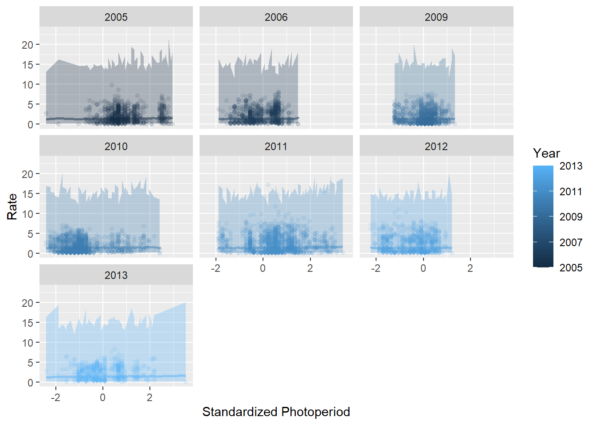

Generalized linear mixed models

Introduction
This week we extended the analytical framework that we have been working with to include both fixed and random effects. We have discussed why we might want to use it and how to interpret the results of these tools. The purpose of this lab is to get you comfortable using GLMM with real data.
By the end of this lab, you should 1) understand why we use mixed effects models, 2) be comfortable specifying general linear mixed models in R and applying the tool to analyze data from start to finish, and 3) be able to diagnose and interpret the results of these models.
Exercises
Linear mixed models (LMM- a special case of GLMM)
We have looked at the GLMM initially this week because of it’s utility for handling the combination of fixed and random effects for the types of data that we commonly encounter in biology and ecology. But, as a special case of the GLMM, we could look at using a Gaussian (normal) error distribution or any suite of transformed distributions for our models, too! The advantage of doing this is that the models tend to be fit a little more easily (i.e. reliably) under the arguably unstable engines and ever-changing optimization algorithms for this model class. This special case of the GLMM goes by a variety of names depending on uses. For example, we might refer to them as ‘repeated measures’ ANOVA, ‘nested’ or ‘factorial’ ANOVA, or ‘linear mixed models’ (LMM).
You’ll want the tidyverse loaded as always, and we’ll also be playing with the new functions we learned about from lme4 and merTools. You can go ahead and load those when you are ready to get started.
Let’s take a look at a new data set for this example. Read in the data file called est.mvmt.txt from the class data sets.
These data are from endangered Atlantic salmon Salmo salar smolts. The response in the data is Rate and is a measure of the movement rate of individual fish (in body lengths per second). Federal fisheries managers were interested in how this movement rate was affected by seasonal changes in environmental factors, but also characteristics of the individual fish (as rearing history [hatchery or wild], length and mass, gill NKA activity) and factors related to the conservation hatchery practices (many of these same characteristics, but also release date and release site in the river[distance from ocean]). To understand if there were non-linear, or “optimal” relationships between movement rate and seasonal variables like photoperiod (Ph), movement date (MovDate) and river kilometer (RKM), we also investigated quadratic or polynomial terms that allow for a parabolic relationship between each of these variables and the movement Rate of individual fish.
A brief description of the data follows:
TagID: individual fish ID
FL: forklength of fish
Mass: mass of individual fish
ATP: gill Na+,K+-ATPase activity
RelSite: release site
RelDate: release date (ordinal)
Org: rearing history (hatchery or wild)
Year: year of the study
SW: indicator for salt water for each relocation
RelKM: river kilometer of release site
Dams: the number of dams passed by individual fish
RKM_Loc: river kilometer of detections following release
Rate: movement rate of individual fish in various reaches
MovDate: the date on which movement occurred
k: fish condition (a measure of rotundity or plumpness)
MovDate2: a quadratic term for movement date
RKM: the river kilometer of relocation
RKM2: a quadratic term for each relocation
Dis: mean river discharge over movement period
Phs: photoperiod (daylength) for the movement period
Ph2s: a quadratic term for daylength for movement periodAll of the potential explanatory variables (covariates) for this data set were standardized (centered and scaled) prior to analysis in an effort to facilitate comparison between effects of various explanatory variables. The full citation for the study can be found here
Your charge will be to fit a series of models and analyze them within the context of a linear mixed effects model.
First, build a candidate model set based on your own interests or the model selection table in the paper provided. There are a lot of covariates in this data set, and many of them are highly collinear, so you will need to put some thought into how you choose your variables. You will need to make a minimum of 5 models and a maximum of 10.
I will place a few stipulations on this:
You need to account for repeat measurements of movement rates within years of this study. The original analysis used individual random effects (
TagID) but the computational machinery has changed inlmer()and that now throws warnings about singularity that freak people out. This occurs because the actual standard deviation on our random effect of individual is very near to zero. This has caused a lot of huff in recent years as it is a change from the initial routines used bylmer(). Note that these warnings were not produced in any of the previous versions of this data analysis (yikes!). In this specific case, the warning can be safely ignored because we expect this, but it may be a sign that we don’t actually need the random effect (we’ll keep it in all models). In any case, we will work withYearas a random effect in all of these models.Use the log of movement rate as the response. Movement rate is constrained to be greater than zero. While we are fairly robust to assumptions of normality within this framework, we do not want to allow negative predictions of movement rate.
- There are a number of second-order polynomials included in the data set. These can be used to investigate non-linear effects of X on Y. For example, we might expect that movement
Ratewould increase initially with Photoperiod (daylight) and then decrease as daylight continues to increase during the summer because there is an optimal window for timing in this migration. If you choose to include one of these relationships in your model, you must include both the first and the second order term. For example, if you would like to investigate non-linear seasonal changes in movementRatethat are dependent upon photoperiodPhS, then you must include bothPhSandPh2Sin your model, like this:
Make a list object of at least 5 models like this that you chose to test so you can do model selection later. If you have forgotten how to do this, see the lecture notes.
Here is one more example of ONE FORM of the syntax we might use to fit a linear mixed model in the “lme4” package using lme4::lmer(). PLEASE NOTE: you do not need to build this model for the exercise. It just happened to be the first in the list of candidate models from the R script that we used to analyze these data for the real study.
Question 1. Why did you choose to test this model set? What factors did you consider in their development and what hypotheses do these represent?
Next we will use an information-theoretic approach to model selection based on Akaike’s information criterion. You can use the aictab function in the AICcmodavg package using the same methods we learned in Chapter 11.
Question 2. According to your model selection statistics, which of your models was the top model? Is there clear evidence for a best model (use \(\Delta\)AIC and wi to decide)?
Question 3. Were there any variables that were clearly more important than others in your candidate set?
Before you go any further (i.e., before you look at any of the model summaries) have a look at the model diagnostics for your best model.
Does the distribution appear to be (more or less) normal with a mean of zero with respect to the fitted values?
Now go ahead and look at the summary of your best model.
Food for thought: What factors were included in your best model? Are they all considered significant at \(alpha\) = 0.05? You could use the Anova() function from the car library to find out. This is what it would look like for the example model that I made above.
## Analysis of Deviance Table (Type II Wald chisquare tests)
##
## Response: logRate
## Chisq Df Pr(>Chisq)
## PhS 1.0354 1 0.3089
## Ph2S 0.4842 1 0.4865Question 4. Comparing the magnitude of the (standardized) regression coefficients in your summary, which variable included in your best model has the strongest effect on movement rate? Is this supported by your model selection results? Note: we can compare the magnitude of regression coefficients in this case because the variables were all transformed to z-scores for the analysis - something we’ve not discussed in detail
To wrap things up, let’s go ahead and make predictions from our best models following the examples in Chapter 14.5
Here is what this would look like for my example model. Notice how similar this is to how we’ve plotted everything else since week 6?
# Simulate predictions from the relationship
# stored in the model fit using our original data
log_preds <- predictInterval(
merMod = photo_mod,
level = 0.95, n.sims = 1000,
stat = "median",
type = "linear.prediction",
which = "fixed",
include.resid.var = TRUE
)
# Convert them to the real scale for plotting
real_preds <- apply(log_preds, 2, exp)
# Combine predictions with the original data
mer_preds <- data.frame(est_mvmt, real_preds)
ggplot(mer_preds, aes(x = PhS, y = Rate, color = Year, fill = Year)) +
geom_point(alpha = 0.10) +
geom_ribbon(aes(ymin = lwr, ymax = upr, color = NULL), alpha = .3) +
geom_line(aes(y = fit), lwd = 1, alpha = 0.50) +
facet_wrap(~Year) +
xlab("Standardized Photoperiod") +
ylab("Rate") Wow, mine looks like garbage because this predictor was not significant all on its own. Perhaps yours will look better?
Question 5. Use the summary() of your best model, in addition to the predictive plots you have made to report statistical significance of your explanatory variables and the direction of their relationships to logRate.
This work is licensed under a Creative Commons Attribution 4.0 International License. Data are provided for educational purposes only unless otherwise noted.